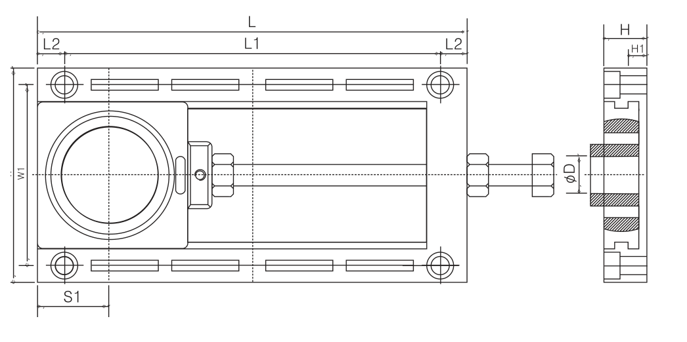
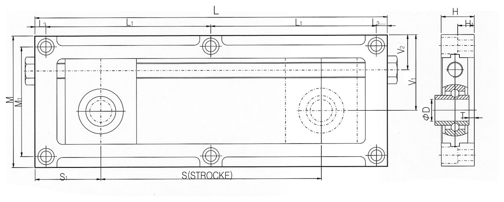
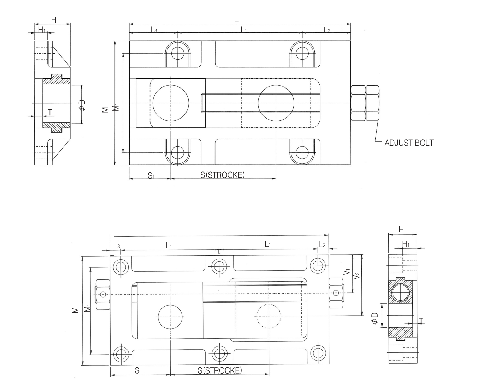

Take-up Units
테이크업 유닛
컨베이어 벨트·체인의 장력을 조절하는 슬라이드형 마운트입니다. 아래 탭에서 종류별 규격을 확인하세요.
소형화·경량화된 알루미늄 소재 테이크업으로, 고속회전에 적합하고 설치가 쉬우며 부식에 강합니다. 축경 12~20mm용 소형 유닛입니다.
당사 정식 규격 도면

L=전장 · L1·L2=볼트 구멍 간격 · W1=폭 · S1=조정볼트 위치 · H·H1=높이 · φD=축경
| 형번 | D(축경) | L | L1 | L2 | W | W1 | H | H1 | T±0.1 | S1 | STROKE | 조정볼트 | 고정볼트 |
|---|---|---|---|---|---|---|---|---|---|---|---|---|---|
| USBM201 | 12 | 160 | 140 | 10 | 80 | 67.5 | 16 | 7 | 3.5 | 27 | 71 | M8 | 4-M6 |
| USBM202 | 15 | 160 | 140 | 10 | 80 | 67.5 | 16 | 7 | 3.5 | 27 | 71 | M8 | 4-M6 |
| USBM203 | 17 | 160 | 140 | 10 | 80 | 67.5 | 16 | 7 | 3.5 | 27 | 71 | M8 | 4-M6 |
| USBM204 | 20 | 160 | 140 | 10 | 80 | 67.5 | 16 | 7 | 3.5 | 27 | 71 | M8 | 4-M6 |
| USBM202SS | 15 | 160 | 140 | 10 | 80 | 67.5 | 16 | 7 | 3.5 | 27 | 71 | M8 | 4-M6 |
| USBM203SS | 17 | 160 | 140 | 10 | 80 | 67.5 | 16 | 7 | 3.5 | 27 | 71 | M8 | 4-M6 |
| USBM204SS | 20 | 160 | 140 | 10 | 80 | 67.5 | 16 | 7 | 3.5 | 27 | 71 | M8 | 4-M6 |
단위: mm · SS는 스테인리스 소재입니다.
강철판(스틸 플레이트) 소재 테이크업으로, 축경 20~50mm 범위를 지원하는 필로우 블럭·캐링 겸용 마운트 프레임입니다.
당사 정식 규격 도면

C=전장 · C1·C2·C3=길이 구간 · AL=조정거리 · Wc·W1·W2=폭 · B·S=측면 폭·두께 · D0~D3=단차 지름 · d=축경
| 형번 | 축경d | C | C1 | C2 | C3 | AL(조정거리) | Wc | W1 | W2 | B | S | Do | D1 | D2 | D3 | H | T | 볼트 |
|---|---|---|---|---|---|---|---|---|---|---|---|---|---|---|---|---|---|---|
| TFU204 | 20 | 261 | 234 | 48 | 91 | 95 | 65 | 90 | 98 | 31 | 15 | 23 | 27 | 34 | 15 | 11 | 2.3 | 10 |
| TFU205 | 25 | 261 | 234 | 48 | 91 | 95 | 65 | 90 | 98 | 31 | 15 | 23 | 27 | 34 | 15 | 11 | 2.3 | 10 |
| TFU206 | 30 | 382 | 342 | 77 | 120 | 145 | 73 | 113 | 123 | 38 | 16 | 37 | 41 | 45 | 22 | 15 | 3.2 | 8 |
| TFU207 | 35 | 382 | 342 | 77 | 120 | 145 | 73 | 113 | 123 | 43 | 17 | 37 | 41 | 48 | 22 | 15 | 3.2 | 8 |
| TFU208 | 40 | 425 | 378 | 80 | 147 | 160 | 98 | 138 | 문의 | 49 | 18 | 문의 | 44 | 54 | 24 | 17 | 4 | 20 |
| TFU210 | 50 | 425 | 378 | 80 | 147 | 160 | 98 | 138 | — | 52 | 19 | — | 44 | 57 | 24 | 17 | 4 | 20 |
단위: mm · TFU208행의 W2·Do 값은 원본 카탈로그 표에서도 다른 열과 정렬이 어긋나 있어 “문의”로 표기했습니다(발주 전 확인 필요). TFU205·207·210은 원본에서 직경(d)만 다르고 나머지 치수는 바로 위 행과 병합 표기되어 있어 그대로 옮겼습니다.
UC 베어링 인서트를 삽입하는 테이크업 유닛입니다. 204~212 사이즈, 짧은 조정거리(A)·긴 조정거리(B) 두 스트로크로 공급되며, 벨트 컨베이어 라인에 주로 사용됩니다. 215A·B, 216A·B는 주문생산입니다.
당사 정식 규격 도면 (B형 · 긴 조정거리 기준)

L=전장 · L1=볼트 구멍 간격(반복) · L2·L3=단부 길이 · S1=조정볼트 위치 · S(STROKE)=조정거리 · H·H1=높이 · φD=축경 · T=두께
A형(짧은 조정거리)도 동일한 치수 기호 체계를 사용합니다.
UCTM-204/205 (A형 · B형)4건
| 구분 | L | L1 | L2 | W | W1 | H | H1 | D(축경) | T±0.5 | S1 | STROKE | 조정볼트 | 고정볼트 |
|---|---|---|---|---|---|---|---|---|---|---|---|---|---|
| UCTM-204A | 170 | 150 | 10 | 102 | 82 | 26 | 17 | 20 | 4.5 | 35 | 55 | M14 | 4-M8 |
| UCTM-205A | 170 | 150 | 10 | 102 | 82 | 26 | 17 | 25 | 2.5 | 35 | 55 | M14 | 4-M8 |
| UCTM-204B | 250 | 115 | 10 | 102 | 82 | 26 | 17 | 20 | 4.5 | 35 | 135 | M14 | 6-M8 |
| UCTM-205B | 250 | 115 | 10 | 102 | 82 | 26 | 17 | 25 | 2.5 | 35 | 135 | M14 | 6-M8 |
UCTM-206~210 (A형)5건
| 구분 | L | L1 | L2 | L3 | W | W1 | H | H1 | D(축경) | T±0.5 | S1 | S(스트로크) | 조정볼트 | 고정볼트 |
|---|---|---|---|---|---|---|---|---|---|---|---|---|---|---|
| UCTM-206A | 260 | 110 | 10 | 30 | 122 | 100 | 28 | 17 | 30 | 2.3 | 55 | 115 | M16 | 6-M10 |
| UCTM-207A | 310 | 130 | 13 | 37 | 132 | 108 | 29 | 16 | 35 | 1 | 60 | 140 | M18 | 6-M12 |
| UCTM-208A | 350 | 150 | 13 | 37 | 144 | 120 | 34 | 21 | 40 | 4 | 65 | 175 | M20 | 6-M12 |
| UCTM-209A | 420 | 170 | 15 | 65 | 164 | 136 | 38 | 23 | 45 | 7.5 | 75 | 210 | M24 | 6-M14 |
| UCTM-210A | 420 | 170 | 15 | 65 | 164 | 136 | 38 | 23 | 50 | 6.5 | 75 | 210 | M24 | 6-M14 |
UCTM-206~210 (B형)5건
| 구분 | L | L1 | L2 | L3 | W | W1 | H | H1 | D(축경) | T±0.5 | S1 | S(스트로크) | 조정볼트 | 고정볼트 |
|---|---|---|---|---|---|---|---|---|---|---|---|---|---|---|
| UCTM-206B | 320 | 130 | 10 | 50 | 122 | 100 | 28 | 17 | 30 | 2.3 | 55 | 165 | M16 | 6-M10 |
| UCTM-207B | 390 | 160 | 12 | 58 | 132 | 108 | 29 | 16 | 35 | 1 | 60 | 225 | M18 | 6-M12 |
| UCTM-208B | 455 | 185 | 12.5 | 72.5 | 144 | 120 | 34 | 21 | 40 | 4 | 65 | 285 | M20 | 6-M12 |
| UCTM-209B | 580 | 170 | 15 | 55 | 164 | 136 | 38 | 23 | 45 | 7.5 | 75 | 375 | M24 | 8-M14 |
| UCTM-210B | 580 | 170 | 15 | 55 | 164 | 136 | 38 | 23 | 50 | 6.5 | 75 | 375 | M24 | 8-M14 |
UCTM-211/212 (A형 · B형)4건
| 구분 | L | L1 | L2 | L3 | W | W1 | H | H1 | D(축경) | T±0.5 | S1 | S(스트로크) | 조정볼트 | 고정볼트 |
|---|---|---|---|---|---|---|---|---|---|---|---|---|---|---|
| UCTM-211A | 540 | 155 | 15 | 60 | 190 | 161 | 43 | 28 | 55 | 5.5 | 90 | 300 | M27 | 8-M14 |
| UCTM-212A | 540 | 155 | 15 | 60 | 190 | 161 | 43 | 28 | 60 | 2.5 | 90 | 300 | M27 | 8-M14 |
| UCTM-211B | 715 | 155 | 19.5 | 75.5 | 194 | 128 | 43 | 28 | 55 | 5.5 | 90 | 475 | M27 | 8-M14 |
| UCTM-212B | 715 | 155 | 19.5 | 75.5 | 194 | 128 | 43 | 28 | 60 | 5.5 | 90 | 475 | M27 | 8-M14 |
단위: mm · UCTM-215A·B, 216A·B는 주문생산품으로 카탈로그에 규격이 실려 있지 않습니다(견적 문의로 안내).
UC 베어링 인서트용 테이크업이되, 축 중심선이 한쪽으로 치우친(오프셋) 구조입니다. 벽면 설치나 협소한 공간, 축 중심 위치를 옮겨야 할 때 사용하며, 조정볼트가 위치 이동 없이 회전만 합니다.
당사 정식 규격 도면 (B형 · 긴 조정거리 기준)

L=전장 · L1·L2·L3=길이 구간 · M·M1=폭 · V1·V2=오프셋(축 중심 편차) 치수 · S1=조정볼트 위치 · S(STROKE)=조정거리 · H·H1=높이 · φD=축경 · T=두께
| 구분 | L | L1 | L2 | W | W1 | W2 | H | H1 | V1 | V2 | D(축경) | T±0.5 | S1 | S(스트로크) | 조정볼트 | 고정볼트 |
|---|---|---|---|---|---|---|---|---|---|---|---|---|---|---|---|---|
| UCTN-204A | 220 | 200 | 10 | 100 | 40 | 20 | 27 | 18 | 59 | 21 | 20 | 6 | 60 | 100 | M14 | 4-M8 |
| UCTN-205A | 220 | 200 | 10 | 100 | 40 | 20 | 27 | 18 | 59 | 21 | 25 | 4 | 60 | 100 | M14 | 4-M8 |
| UCTN-204B | 320 | 150 | 10 | 120 | 102 | — | 27 | 18 | 69 | 31 | 20 | 6 | 60 | 200 | M14 | 6-M8 |
| UCTN-205B | 320 | 150 | 10 | 120 | 102 | — | 27 | 18 | 69 | 31 | 25 | 4 | 60 | 200 | M14 | 6-M8 |
단위: mm · B형(204B·205B)은 원본 표에 W2 항목이 없어 “—”로 표기했습니다.
베어링 없이 샤프트만 직접 고정하는 테이크업으로, 체인 컨베이어에 주로 쓰이며 자동창고 컨베이어·자동화 기계·산업기계 제작 등에도 응용됩니다. CTSN은 CTSM과 동일 개념이나 축 중심이 한쪽으로 치우쳐(오프셋) 있어 벽면 설치나 축 중심 위치 변경이 필요할 때 사용합니다.
당사 정식 규격 도면 (위: CTSM 정중심형 · 아래: CTSN 오프셋형)

L=전장 · L1·L2·L3=길이 구간 · M·M1=폭 · V1·V2=오프셋 치수(CTSN만 해당) · S1=조정볼트 위치 · S(STROKE)=조정거리 · H·H1=높이 · φD=축경 · T=두께
| 형번 | L | L1 | L2 | W | W1 | H | H1 | D(축경) | T±0.5 | S1 | STROKE | 조정볼트 | 고정볼트 |
|---|---|---|---|---|---|---|---|---|---|---|---|---|---|
| CTSM-1 | 170 | 150 | 10 | 60 | 40 | 26 | 17 | 15 | 6 | 40 | 80 | M14 | 4-M8 |
| CTSM-3 | 250 | 115 | 10 | 102 | 82 | 26 | 17 | 20 | 4.5 | 35 | 135 | M14 | 6-M8 |
| CTSM-4 | 250 | 115 | 10 | 102 | 82 | 26 | 17 | 25 | 2.5 | 35 | 135 | M14 | 6-M8 |
단위: mm
| 형번 | L | L1 | L2 | W | W1 | H | H1 | D(축경) | T±0.5 | V1 | V2 | S1 | S(스트로크) | 조정볼트 | 고정볼트 |
|---|---|---|---|---|---|---|---|---|---|---|---|---|---|---|---|
| CTSN-7 | 200 | 90 | 10 | 100 | 80 | 26 | 17 | 22 | 4 | 35 | 56 | 55 | 90 | M16 | 6-M8 |
| CTSN-9 | 300 | 140 | 10 | 114 | 90 | 28 | 17 | 32 | 4 | 37 | 64 | 60 | 180 | M18 | 6-M10 |
단위: mm · 안내 카드에 있던 “CTEM-1”은 당사 카탈로그에서 확인되지 않아, 동일 위치의 정식 형번인 “CTSM-1”로 정정해 실었습니다.
※ 위 표는 당사 정식 규격표(테이크업 유닛 챕터)를 기준으로 작성했습니다. 정밀 가공·발주 전에는 반드시 당사 정식 규격표 원본 또는 견적 문의로 최종 확인하시기 바랍니다.